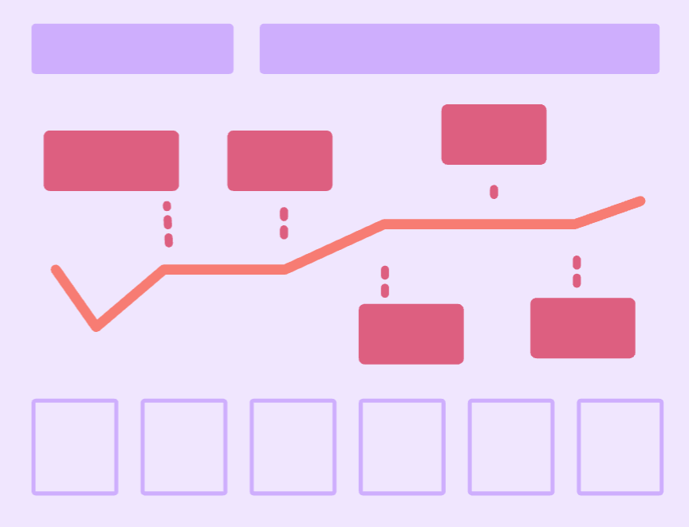

Interactive Web Pages and Understanding Web Design Evolution
Week 4
This week's coding and web design lectures provided insights into creating functional web pages and the historical progression of web design. The HTML tutorial demonstrated using anchor tags for hyperlinks and lists for organization. It provided experience structuring content with text, images, and lists. The instructions for setting up a VS Code project were helpful. I now feel equipped to start building interactive pages. The web design lecture gave an overview of key developments from 1998-2008. It provided perspective on the impact of Web 2.0, social media, responsive design, and smartphones. The discussion emphasized the need for an ethical, human-centered approach focused on accessibility and aligning with user needs. Learning about early visual trends and UX design thinking concepts was informative. The SMART framework presents a methodical way to define business objectives. The collaborative diagram activity highlighted the importance of identifying shared goals between designers and users. Overall, the lectures expanded technical and theoretical knowledge. I now understand web pages use proper HTML structures. Design principles have evolved over the years. Moving forward, I aim to use new coding skills to create accessible, user-friendly websites that address business needs effectively. The lectures provided useful guidance for continued learning as a designer.
